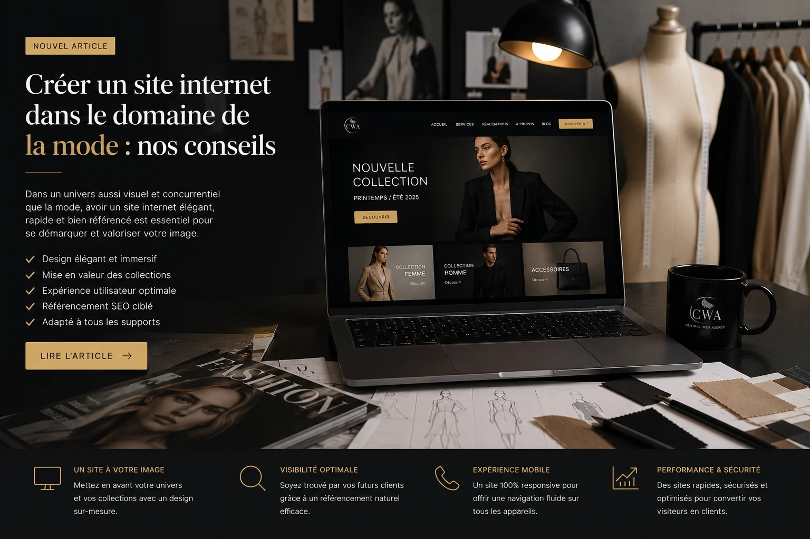

Dans les métiers de la mode, de la beauté et de l'image, votre présence en ligne n'est pas juste un outil commercial c'est le reflet direct de votre univers et de votre professionnalisme. Un Instagram bien géré, c'est bien. Un site vitrine qui vous appartient et qui vous représente vraiment, c'est autre chose.
Pourquoi Instagram ne suffit plus
La majorité des mannequins, stylistes et esthéticiennes à Lyon gèrent leur image principalement via Instagram. C'est compréhensible la plateforme est visuelle, rapide, et gratuite. Mais elle a des limites concrètes que beaucoup découvrent trop tard.
Un directeur artistique, un photographe professionnel ou une agence qui cherche à vous contacter pour un projet sérieux s'attend à trouver un site dédié. Un lien Instagram dans un email de candidature, ça fait amateur. Un lien vers votre site personnel avec votre book, vos mesures, vos collaborations passées et vos contacts ça fait professionnel.
De plus, vous ne contrôlez pas Instagram. L'algorithme change, votre portée diminue, votre compte peut être suspendu. Votre site, lui, vous appartient entièrement et ne dépend d'aucun algorithme.
Ce que doit contenir le site d'un professionnel de la mode à Lyon
Selon votre métier, le contenu varie, mais la structure reste similaire.
Pour un mannequin
- Un book photos soigné, organisé par type de shooting (mode, beauté, commercial, lingerie…)
- Vos mensurations complètes et votre disponibilité géographique
- Vos collaborations passées (marques, photographes, agences)
- Un formulaire de contact clair pour les directeurs de casting et photographes
- Éventuellement, un lien vers votre profil sur les agences avec lesquelles vous travaillez
Pour une esthéticienne ou prothésiste ongulaire
- Vos prestations détaillées avec les tarifs
- Une galerie de vos réalisations (ongles, maquillage, soins…)
- Votre localisation exacte à Lyon ou dans la région
- Un système de prise de rendez-vous ou un numéro de contact direct
- Vos certifications et formations
Pour un styliste ou créateur textile
- Votre univers créatif une page "À propos" qui raconte votre démarche
- Votre portfolio de créations avec les contextes (défilé, shooting, commande privée…)
- Vos collaborations et presse éventuelle
- Comment vous contacter pour une commande ou un projet
Pour un photographe mode
- Un portfolio structuré par univers (mode éditoriale, beauté, portrait, commercial)
- Votre équipement et votre façon de travailler
- Vos tarifs ou du moins une fourchette
- Un formulaire de demande de devis détaillé
Le design compte doublement dans votre secteur
Dans les métiers de la mode et de la beauté, le design de votre site est lui-même un signal fort. Un site générique avec un template basique dit implicitement que vous ne prêtez pas attention aux détails. Un site soigné, cohérent avec votre univers, avec une typographie choisie et une palette de couleurs maîtrisée ça dit exactement le contraire.
Ce n'est pas pour ça qu'il faut dépenser une fortune. Mais ça veut dire que votre site ne doit pas ressembler à celui d'un plombier ou d'un comptable. L'identité visuelle, la hiérarchie des photos, l'espace blanc, la fluidité de navigation tout ça compte dans votre secteur plus qu'ailleurs.
Votre site vitrine est votre book permanent, accessible 24h/24 depuis n'importe quel appareil, par n'importe quel client ou partenaire potentiel.
Le référencement local, un levier sous-exploité
La plupart des professionnels de la mode à Lyon ne pensent pas au SEO. C'est pourtant là que se trouvent des opportunités réelles. Quand quelqu'un tape "esthéticienne Lyon 3", "prothésiste ongulaire Villeurbanne" ou "photographe mode Lyon" sur Google, les premiers résultats récoltent les appels et les demandes. Si votre site est bien référencé sur ces requêtes, vous captez une clientèle qui cherche exactement ce que vous proposez.
C'est d'autant plus intéressant que la concurrence sur ces requêtes locales reste raisonnable. Un site bien structuré, avec le bon contenu et les bonnes balises, peut se positionner en quelques mois sur des requêtes comme "mannequin Lyon" ou "styliste freelance Lyon".
Quel budget pour un site dans les métiers de la mode à Lyon ?
Pour un site vitrine élégant, rapide et bien référencé, comptez à partir de 900€ selon le nombre de pages et le niveau de personnalisation. Chaque projet étant unique, nous établissons un devis gratuit et personnalisé selon vos besoins. Une fois votre site livré, vous pouvez également opter pour notre abonnement de maintenance à partir de 39€ par mois mais c'est entièrement optionnel, pas une obligation.
L'investissement se rentabilise rapidement. Un seul shooting obtenu via votre site, une nouvelle cliente fidèle, une collaboration avec une marque lyonnaise et votre site est déjà amorti.